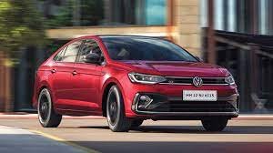

Volkswagen AG konserninin tarixi 1934-cü ildən başlayır. Alman konstruktoru və mühəndisi Ferdinand Porşe ömrünün dörd ilini ilk xalq avtomobilinin yaradılmasına sərf etmişdir. 1934-ci il Reyx hakimiyyəti Porşe avtomobil şirkətinin təməlini qoymuş alman konstruktoru və mühəndisi Ferdinand Porşeyə müasir minik avtomobillərinin yaradılması üçün sifariş etmişdir. Porşe əvvələr də belə bir avtomobil yaratmaq fikrində idi. Bu təklif gəldikdən sonra o, öz ideyalarını həyata keçirmək üçün gözəl imkan əldə etdi. Xalq avtomobilinin (Almanca "volk"-xalq "wagen"-avtomobil) düzəldilməsi üçün "Porsche" konstruktor bürosu ilə (RDA) "İmperiya Avtomobil sənayesi Cəmiyyəti" arasında müqavilə bağlandı. 1935-ci il axır ki, belə bir avtomobil hazırlandı. Volkswagen markasının ilk prototipi müstəqil olaraq öz birinci səyahətini müvəffəqiyyətlə başa çatdırdı. 1936-ci il "İmperiya Avtomobil sənayesi Cəmiyyəti"-nin nəzarəti altında VW 3 seriyasının üç prototipi sınaqlardan müvəffəqiyyətlə keçdi. 1937-ci il ümumi sayı 30 ədəd olmaqla "Böcək"-in "VW30"-ilk prototipi işıq üzü gördü. Konstruksiyada olan qüsurların üzə çıxarılmasından ötrü onların hər biri bir milyon kilometrdən çox yol qət etdi. Avtomobillər konstruktorlar, mühəndislər və sürücülər tərəfindən layiqincə qiymətləndirildi. Xarici görünüşünün böcəyə oxşaması avtomobilə bu ləqəbin verilməsinə səbəb oldu. Volkswagen layihəsinin Gezuvor şirkətinə (VW avtomobillərinin istehsalının hazırlanması üçün şirkət) verilməsi haqda qərar imzalandı.
